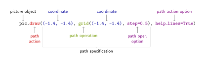

Module tikz
This module provides a way to create, compile, view, and save graphics based on the LaTeX package TikZ & PGF. It makes the creation of TikZ graphics easier when (part of) the underlying data is computed, and makes the preview and debugging of graphics within a Jupyter notebook seamless.
This documentation explains only how to access TikZ' functionality from Python. To understand it, the TikZ & PGF manual needs to be consulted in parallel. A notebook contains examples to get you started.
Function
The module exposes the basic graphics functionality of TikZ, as described in Part III of the manual, except for some specialized functions with complex syntax (pics, graphs, matrices, trees).
At its center is the class Picture. It primarily represents a tikzpicture environment, but also provides methods to create a complete LaTeX document and compile it in the background. Methods of the class serve mainly to insert TikZ commands into this environment, but also allow to load necessary TikZ libraries and LaTeX packages.
LaTeX documents created by this package always contain a single tikzpicture environment, and the document is compiled in such a way that a PDF containing only that picture's bounding box is created. The picture can be directly displayed in a notebook, saved as a PDF, converted to PNG or SVG, and the resulting image file used in another application or again in LaTeX. It is also possible to show the TikZ code corresponding to the picture and copy & paste it into a LaTeX document of your own.
Design
TikZ' basic design comprises
- (sequences of) coordinates,
- path operations,
- path specifications created from the combination of the first two, and
- path actions.
Path actions and other commands are grouped in scope environments. In addition, there are options which can be attached to a path action, path operation, or environment but can also be embedded in a path specification. In the following it is explained how these TikZ stuctures are mapped to Python in this module.

- Coordinate
-
A coordinate can be specified as a
tupleor a NumPy 1d-ndarraywith 2 or 3 elements, or as a string.Elements of
tuples can be numbers or strings. If all elements are numeric, it specifies coordinates in TikZ'xyzcoordinate system. If all are strings (normally a number plus a unit like'2pt') it specifies coordinates in TikZ'canvascoordinate system. Otherwise it specifies a mixedxyz/canvascoordinate.ndarrays must be numeric and represent coordinates in TikZ'xyzcoordinate system.Strings can be used to specify coordinates in TikZ' other coordinate systems, e.g.
polar,perpendicular, andnode. Coordinate-specifying strings are enclosed in parentheses(), possibly prefixed by+or++(relative / incremental coordinates). A special case is the coordinate'cycle', which can be created by the functioncycle().If an argument is intended to be a coordinate, it is normally named
coord. - Sequence of coordinates
-
A sequence of coordinates is specified as a
listof coordinates as described above, or as a numeric 2d-ndarraywith 2 or 3 columns, representingxyzcoordinates.If an argument is expected to be a sequence of coordinates, it is normally named
coords. Often, a single coordinate can be given in place of a sequence. - Path operation
-
A path operation is specified as an object of a subclass of
Operation. The subclass names are lowercase, because in practical use these classes act similar to functions, i.e. they are only instantiated, not manipulated.A path operation is normally not used as a single argument, but as part of a path specification. Some path operations accept options.
- Path specification
-
A path specification is specified as a sequence of path operations and (sequences of) coordinates (shorthand for
movetooperations). It can also include options and strings.A path specification is normally passed as a sequence of arguments named
**specto a path action method. - Path action
-
A path action is specified as a method of
Pictureand other environments. Several method calls in sequence create a sequence of path actions.A path action method typically accepts a path specification as well as options as arguments.
- Scope
-
A scope environment can be added to a
Pictureor another environment using the method environment.add_scope(). This creates aScopeobject, adds it to the environment and returns it. To add path actions and other commands to the environment, call the methods on the returned object. - Option
-
An option is specified as a keyword argument (
**kwoptions) and/or as a string (opt); the string is included as-is in the TikZ-formatted option string. TikZ keys that contain spaces are specified with an underscore_in their place. TikZ keys that do not take a value are specified with the valueTrue. Keys with the valueNoneare not passed to TikZ.For embedding options within a path specification, the function
options()can be used.Classes, methods or functions that accept options contain opt=None, **kwoptions in their signature.
Color
TikZ automatically loads the LaTeX package xcolor, which means that a large number of named colors can be used within pictures. The package also allows to define new colors based on a variety of color models as well as through mixture of known colors, exposed through the
environment.definecolor() and
environment.colorlet()
methods of Picture and other environments.
Expand source code
"""
This module provides a way to create, compile, view, and save graphics based
on the LaTeX package [TikZ & PGF](https://ctan.org/pkg/pgf). It makes the
creation of TikZ graphics easier when (part of) the underlying data is
computed, and makes the preview and debugging of graphics within a Jupyter
notebook seamless.
.. include:: tikz.md
:start-line: 4
"""
# TODO:
# - type hinting
# - all docstring triple-quoted, with blank line after
# - docstring for: class (not `__init__`), method, function; package, module
# - variables are documented in the class/module/package docstring
import atexit
import base64
import hashlib
import html
import numbers
import os
import os.path
import shutil
import subprocess
import tempfile
import fitz
import IPython.display
import numpy as np
class cfg:
"configuration variables"
display_dpi = 192
"""
resolution at which the graphic is rendered for display in the notebook
The default is 192, twice the standard monitor resolution.
"""
file_dpi = 300
"""
resolution at which the graphic is rendered for saved PNG files
The default is 300.
"""
# executable name, possibly including path
# pdflatex is fastest, lualatex + 50%, xelatex + 100%
latex = 'pdflatex'
"""
name of the executable used to compile the LaTeX document
This can be any version of LaTeX that produces PDF output. The fastest
appears to be pdfLaTeX, but choosing another version may be necessary for
specific features.
"""
# {0} is replaced by a Base64-encoded PNG image,
# {1} by TikZ-LaTeX code
demo_template = '\n'.join([
'<div style="background-color:#e0e0e0;margin:0">',
' <div>',
' <div style="padding:10px;float:left">'
' <img src="data:image/png;base64,{0}">',
' </div>',
' <pre',
' style="width:47%;margin:0;padding:10px;float:right;'
+ 'white-space:pre-wrap;font-size:smaller"',
' >{1}</pre>',
' </div>',
' <div style="clear:both"></div>',
'</div>'])
"""
HTML template used by `Picture.demo` for notebook display
The template must contain two placeholders. `{0}` is replaced by a
Base64-encoded PNG-format rendering of the graphic, `{1}`by the output of
`Picture.code`.
"""
# helper functions and helper-helper functions
def _option_code(key, val):
"""
returns TikZ code for single option
helper function for `_options`
"""
# replace underscores by spaces
key = str(key).replace('_', ' ')
if val is True:
# omit `=True`
return key
else:
return f'{key}={str(val)}'
def _options_code(opt=None, **kwoptions):
"""
returns TikZ code for options
helper function to format `opt=None, **kwoptions` in various functions
"""
# use `_option_code` to transform individual options
o = [_option_code(key, val) for key, val in kwoptions.items()
if val is not None]
# insert raw string
if opt is not None:
o.insert(0, opt)
# create TikZ code
code = '[' + ','.join(o) + ']'
# suppress empty options
if code == '[]':
code = ''
return code
# check types
def _str(obj): return isinstance(obj, str)
def _tuple(obj): return isinstance(obj, tuple)
def _numeric(obj): return isinstance(obj, numbers.Real)
def _str_or_numeric(obj): return _str(obj) or _numeric(obj)
def _ndarray(obj): return isinstance(obj, np.ndarray)
def _list(obj): return isinstance(obj, list) # noqa E302
def _coordinate(coord):
"""
check and normalize coordinate
"""
# A coordinate can be a string with enclosing parentheses, possibly
# prefixed by `+` or `++`, or the string 'cycle'.
if _str(coord) and (
(coord.startswith(('(', '+(', '++(')) and coord.endswith(')'))
or coord == 'cycle'):
return coord
# A coordinate can be a 2/3-element tuple containing strings or numbers:
if (_tuple(coord) and len(coord) in [2, 3]
and all(_str_or_numeric(x) for x in coord)):
# If all strings, normalize to string.
if all(_str(x) for x in coord):
return '(' + ','.join(coord) + ')'
# If all numbers, normalize to ndarray.
if all(_numeric(x) for x in coord):
return np.array(coord)
# If mixed, keep.
return coord
# A coordinate can be a 2/3-element 1d-ndarray.
if (_ndarray(coord) and coord.ndim == 1 and coord.size in [2, 3]
and all(_numeric(x) for x in coord)):
return coord
# Otherwise, report error.
raise TypeError(f'{coord} is not a coordinate')
def _sequence(seq, accept_coordinate=True):
"""
check and normalize sequence of coordinates
accept_coordinate: whether to accept a single coordinate
"""
# A sequence can be a list.
if _list(seq):
# Normalize contained coordinates.
seq = [_coordinate(coord) for coord in seq]
# If all coordinates are 1d-ndarrays, make the sequence a 2d-ndarray.
if (all(_ndarray(coord) for coord in seq)
and all(coord.size == seq[0].size for coord in seq)):
return np.array(seq)
return seq
# A sequence can be a numeric 2d-ndarray with 2 or 3 columns.
if (_ndarray(seq) and seq.ndim == 2 and seq.shape[1] in [2, 3]
and all(_numeric(x) for x in seq.flat)):
return seq
# Optionally accept a coordinate and turn it into a 1-element sequence.
if accept_coordinate:
return _sequence([seq])
# Otherwise, report error.
raise TypeError(f'{seq} is not a sequence of coordinates')
def _str_or_numeric_code(x):
"""
transform element of coordinate into TikZ representation
Leaves string elements as is, and converts numeric elements to a
fixed-point representation with 5 decimals precision (TikZ: ±16383.99999)
without trailing '0's or '.'
"""
if _str(x):
# leave string as-is
return x
else:
# convert numeric elements to a fixed-point representation with 5
# decimals precision (TikZ: ±16383.99999) without trailing '0's or '.'
return '{:.5f}'.format(x).rstrip('0').rstrip('.')
def _coordinate_code(coord):
"returns TikZ code for coordinate"
# assumes the argument has already been normalized
if _str(coord):
# leave string as-is
return coord
else:
return '(' + ','.join(map(_str_or_numeric_code, coord)) + ')'
# coordinates
def cycle():
"cycle coordinate"
return 'cycle'
# raw object
class Raw:
"""
raw TikZ code object
In order to support TikZ features that are not explicitly modelled, objects
of this class encapsulate a string which is copied as-is into the TikZ
code. `Raw` objects can be used in place of `Operation` and `Action`
objects. Normally it is not necessary to explicily instantiate this class,
because the respective methods accept strings and convert them into `Raw`
objects internally.
"""
def __init__(self, string):
self.string = string
def code(self):
"""
returns TikZ code
Returns the stored string.
"""
return self.string
# path operations (§14)
class Operation:
"""
path operation
Path operations are modelled as `Operation` objects.
Names for `Operation` subclasses are lowercase, because from a user
perspective they act like functions; no method call or field access should
be performed on their instances.
This is an abstract superclass that is not to be instantiated.
"""
def code(self):
"returns TikZ code"
pass
class moveto(Operation):
"""
one or several move-to operations
`coords` can be a coordinate or a sequence of coordinates.
See [§14.1](https://pgf-tikz.github.io/pgf/pgfmanual.pdf#subsection.14.1)
"""
def __init__(self, coords):
# normalize coordinates
self.coords = _sequence(coords, accept_coordinate=True)
def code(self):
# put move-to operation before each coordinate,
# for the first one implicitly
return ' '.join(_coordinate_code(coord) for coord in self.coords)
class lineto(Operation):
"""
one or several line-to operations of the same type
`coords` can be a coordinate or a sequence of coordinates.
`op` can be `'--'` for straight lines (default), `'-|'` for first
horizontal, then vertical, or `'|-'` for first vertical, then horizontal.
see [§14.2](https://pgf-tikz.github.io/pgf/pgfmanual.pdf#subsection.14.2)
"""
def __init__(self, coords, op='--'):
# normalize coordinates
self.coords = _sequence(coords, accept_coordinate=True)
self.op = op
def code(self):
# put line-to operation before each coordinate
return f'{self.op} ' + f' {self.op} '.join(
_coordinate_code(coord) for coord in self.coords)
class line(Operation):
"""
convenience version of `lineto`
Starts with move-to instead of line-to operation.
"""
def __init__(self, coords, op='--'):
# normalize coordinates
self.coords = _sequence(coords)
self.op = op
def code(self):
# put line-to operation between coordinates
# (implicit move-to before first)
return f' {self.op} '.join(
_coordinate_code(coord) for coord in self.coords)
class curveto(Operation):
"""
curve-to operation
`coord`, `control1`, and the optional `control2` must be coordinates.
see [§14.3](https://pgf-tikz.github.io/pgf/pgfmanual.pdf#subsection.14.3)
"""
def __init__(self, coord, control1, control2=None):
# normalize coordinates
self.coord = _coordinate(coord)
self.control1 = _coordinate(control1)
if control2 is not None:
self.control2 = _coordinate(control2)
else:
self.control2 = None
def code(self):
code = '.. controls ' + _coordinate_code(self.control1)
if self.control2 is not None:
code += ' and ' + _coordinate_code(self.control2)
code += ' ..' + ' ' + _coordinate_code(self.coord)
return code
class rectangle(Operation):
"""
rectangle operation
`coord` must be a coordinate
see [§14.4](https://pgf-tikz.github.io/pgf/pgfmanual.pdf#subsection.14.4)
"""
def __init__(self, coord, opt=None, **kwoptions):
# normalize coordinate
self.coord = _coordinate(coord)
self.opt = opt
self.kwoptions = kwoptions
def code(self):
return ('rectangle' + _options_code(opt=self.opt, **self.kwoptions)
+ ' ' + _coordinate_code(self.coord))
class circle(Operation):
"""
circle operation
Either `radius` or `x_radius` and `y_radius` (for an ellipse) must be
given. If all are specified, `radius` overrides the other two options. They
can be numbers or a string containing a number and a dimension.
The circle is centered at the current coordinate, unless another coordinate
is given as `at`.
see [§14.6](https://pgf-tikz.github.io/pgf/pgfmanual.pdf#subsection.14.6)
"""
def __init__(self, radius=None, x_radius=None, y_radius=None, at=None,
opt=None, **kwoptions):
# overriding logic
# Information is stored as separate radii to enable scaling.
if radius is not None:
self.x_radius = radius
self.y_radius = radius
else:
self.x_radius = x_radius
self.y_radius = y_radius
# normalize coordinate
if at is not None:
self.at = _coordinate(at)
else:
self.at = None
self.opt = opt
self.kwoptions = kwoptions
def code(self):
kwoptions = self.kwoptions
if self.x_radius == self.y_radius:
kwoptions['radius'] = self.x_radius
else:
kwoptions['x_radius'] = self.x_radius
kwoptions['y_radius'] = self.y_radius
if self.at is not None:
kwoptions['at'] = _coordinate_code(self.at)
return 'circle' + _options_code(opt=self.opt, **self.kwoptions)
class arc(Operation):
"""
arc operation
Either `radius` or `x_radius` and `y_radius` (for an elliptical arc) must
be given. If all are specified, `radius` overrides the other two options.
They can be numbers or a string containing a number and a dimension.
see [§14.7](https://pgf-tikz.github.io/pgf/pgfmanual.pdf#subsection.14.7)
"""
def __init__(self, radius=None, x_radius=None, y_radius=None,
opt=None, **kwoptions):
# overriding logic
# Information is stored as separate radii to enable scaling.
if radius is not None:
self.x_radius = radius
self.y_radius = radius
else:
self.x_radius = x_radius
self.y_radius = y_radius
self.opt = opt
self.kwoptions = kwoptions
def code(self):
kwoptions = self.kwoptions
if self.x_radius == self.y_radius:
kwoptions['radius'] = self.x_radius
else:
kwoptions['x_radius'] = self.x_radius
kwoptions['y_radius'] = self.y_radius
return 'arc' + _options_code(opt=self.opt, **kwoptions)
class grid(Operation):
"""
grid operation
Either `step` or `xstep` and `ystep` must be given. If all are specified,
`step` overrides the other two options. They can be numbers or a string
containing a number and a dimension. Specifying `step` as a coordinate is
not supported, use `xstep` and `ystep` instead.
see [§14.8](https://pgf-tikz.github.io/pgf/pgfmanual.pdf#subsection.14.8)
"""
def __init__(self, coord, step=None, xstep=None, ystep=None,
opt=None, **kwoptions):
# normalize coordinate
self.coord = _coordinate(coord)
# overriding logic
# Information is stored as separate radii to enable scaling.
if step is not None:
self.xstep = step
self.ystep = step
else:
self.xstep = xstep
self.ystep = ystep
self.opt = opt
self.kwoptions = kwoptions
def code(self):
kwoptions = self.kwoptions
if self.xstep == self.ystep:
kwoptions['step'] = self.xstep
else:
kwoptions['xstep'] = self.xstep
kwoptions['ystep'] = self.ystep
return ('grid' + _options_code(opt=self.opt, **kwoptions)
+ ' ' + _coordinate_code(self.coord))
class parabola(Operation):
"""
parabola operation
`coord` and the optional `bend` must be coordinates.
see [§14.9](https://pgf-tikz.github.io/pgf/pgfmanual.pdf#subsection.14.9)
"""
def __init__(self, coord, bend=None, opt=None, **kwoptions):
# normalize coordinates
self.coord = _coordinate(coord)
if bend is not None:
self.bend = _coordinate(bend)
else:
self.bend = None
self.opt = opt
self.kwoptions = kwoptions
def code(self):
code = 'parabola' + _options_code(opt=self.opt, **self.kwoptions)
if self.bend is not None:
code += ' bend ' + _coordinate_code(self.bend)
code += ' ' + _coordinate_code(self.coord)
return code
class sin(Operation):
"""
sine operation
`coord` must be a coordinate.
see [§14.10](https://pgf-tikz.github.io/pgf/pgfmanual.pdf#subsection.14.10)
"""
def __init__(self, coord, opt=None, **kwoptions):
# normalize coordinate
self.coord = _coordinate(coord)
self.opt = opt
self.kwoptions = kwoptions
def code(self):
return ('sin' + _options_code(opt=self.opt, **self.kwoptions)
+ ' ' + _coordinate_code(self.coord))
class cos(Operation):
"""
cosine operation
`coord` must be a coordinate.
see [§14.10](https://pgf-tikz.github.io/pgf/pgfmanual.pdf#subsection.14.10)
"""
def __init__(self, coord, opt=None, **kwoptions):
# normalize coordinate
self.coord = _coordinate(coord)
self.opt = opt
self.kwoptions = kwoptions
def code(self):
return ('cos' + _options_code(opt=self.opt, **self.kwoptions)
+ ' ' + _coordinate_code(self.coord))
class topath(Operation):
"""
to-path operation
`coord` must be a coordinate.
see [§14.13](https://pgf-tikz.github.io/pgf/pgfmanual.pdf#subsection.14.13)
"""
def __init__(self, coord, opt=None, **kwoptions):
# normalize coordinate
self.coord = _coordinate(coord)
self.opt = opt
self.kwoptions = kwoptions
def code(self):
return ('to' + _options_code(opt=self.opt, **self.kwoptions)
+ ' ' + _coordinate_code(self.coord))
class node(Operation):
"""
node operation
`contents` must be a string containing the node text, and may be LaTeX
code.
The optional `name` must be a string, which allows later references to the
coordinate `(`name`)` in TikZ' node coordinate system.
The node is positioned relative to the current coordinate, unless the
optional coordinate `at` is given.
Animation is not supported because it does not make sense for static
image generation. The foreach statement for nodes is not supported because
it can be replaced by a Python loop.
see [§17](https://pgf-tikz.github.io/pgf/pgfmanual.pdf#section.17)
"""
# Provides 'headless' mode for `Scope.node` and `Scope.coordinate`
def __init__(self, contents, name=None, at=None, _headless=False,
opt=None, **kwoptions):
self.name = name
self.contents = contents
# normalize coordinate
if at is not None:
self.at = _coordinate(at)
else:
self.at = None
self.headless = _headless
self.opt = opt
self.kwoptions = kwoptions
def code(self):
if not self.headless:
code = 'node'
else:
code = ''
code += _options_code(opt=self.opt, **self.kwoptions)
if self.name is not None:
code += f' ({self.name})'
if self.at is not None:
code += ' at ' + _coordinate_code(self.at)
code += ' {' + self.contents + '}'
if self.headless:
code = code.lstrip()
return code
class coordinate(Operation):
"""
coordinate operation
`name` must be a string, which allows later references to the coordinate
`(`name`)` in TikZ' node coordinate system.
The node is positioned relative to the current coordinate, unless the
optional coordinate `at` is given.
Animation is not supported because it does not make sense for static
image generation. The foreach statement for nodes is not supported because
it can be replaced by a Python loop.
see
[§17.2.1](https://pgf-tikz.github.io/pgf/pgfmanual.pdf#subsubsection.17.2.1)
"""
def __init__(self, name, at=None, _headless=False, opt=None, **kwoptions):
self.name = name
# normalize coordinate
if at is not None:
self.at = _coordinate(at)
else:
self.at = None
self.headless = _headless
self.opt = opt
self.kwoptions = kwoptions
def code(self):
if not self.headless:
code = 'coordinate'
else:
code = ''
code += _options_code(opt=self.opt, **self.kwoptions)
code += f' ({self.name})'
if self.at is not None:
code += ' at ' + _coordinate_code(self.at)
if self.headless:
code = code.lstrip()
return code
class plot(Operation):
"""
plot operation
`coords` can be a coordinate or a sequence of coordinates.
The optional `to` determines whether a line-to operation is included before
the plot operation.
The difference between `plot coordinates` and `plot file` is not exposed;
the decision whether to specify coordinates inline in the TikZ code or
provide them through a file is made internally. Coordinate expressions and
gnuplot formulas are not supported.
see [§22](https://pgf-tikz.github.io/pgf/pgfmanual.pdf#section.22)
"""
def __init__(self, coords, to=False, opt=None, **kwoptions):
# normalize coordinates
self.coords = _sequence(coords, accept_coordinate=True)
self.to = to
self.opt = opt
self.kwoptions = kwoptions
def code(self):
# The 'file' variant may be used in the future as an alternative to
# coordinates when there are many points.
if self.to:
code = '--plot'
else:
code = 'plot'
code += _options_code(opt=self.opt, **self.kwoptions)
code += ' coordinates {' + ' '.join(
_coordinate_code(coord) for coord in self.coords) + '}'
return code
def options(opt=None, **kwoptions):
"""
in-path options
Though this is not a path operation, it can be specified at an arbitrary
position within a path specification. It sets options for the rest of the
path (unless they are path-global).
"""
# just a wrapper around _options_code
return _options_code(opt=opt, **kwoptions)
# actions on paths
def _operation(op):
"""
check and normalize path specification elements
The elements of a path specification argument (`*spec`) can be `Operation`
objects (left as is), (lists of) coordinates (converted to `moveto`
objects), and strings (converted to `Raw` objects).
helper function for `Action`
"""
if isinstance(op, Operation):
# leave `Operation` as is
return op
if _str(op):
# convert string to `Raw` object
return Raw(op)
return moveto(op)
class Action:
"""
action on path
Objects of this class are used to represent path actions. It is not
normally necessary to instantiate this class, because `Action` objects are
created and added implicitly by environment methods like
[<code>Picture.path()</code>](#tikz.Scope.path).
see [§15](https://pgf-tikz.github.io/pgf/pgfmanual.pdf#section.15)
"""
def __init__(self, action_name, *spec, opt=None, **kwoptions):
self.action_name = action_name
# normalize path specification
self.spec = [_operation(op) for op in spec]
self.opt = opt
self.kwoptions = kwoptions
def code(self):
"returns TikZ code"
return ('\\' + self.action_name
+ _options_code(opt=self.opt, **self.kwoptions)
+ ' ' + ' '.join(op.code() for op in self.spec) + ';')
# environments
class Scope:
"""
scope environment
A scope can be used to group path actions and other commands together, so
that options can be applied to them in total.
Do not instantiate this class, but use the
[<code>add_scope()</code>](#tikz.Scope.addscope) method of `Picture` or
another environment.
see
[§12.3.1](https://pgf-tikz.github.io/pgf/pgfmanual.pdf#subsubsection.12.3.1)
"""
def __init__(self, opt=None, **kwoptions):
self.elements = []
self.opt = _options_code(opt=opt, **kwoptions)
def _append(self, el):
"""
append element
Elements of an environment object can be `Action` objects (for path
actions), `Raw` objects (for other commands), or other environment
objects.
"""
self.elements.append(el)
def add_scope(self, opt=None, **kwoptions):
"""
create and add scope to the current environment
A `Scope` object is created, added, and returned.
"""
s = Scope(opt=opt, **kwoptions)
self._append(s)
return s
def code(self):
"returns TikZ code"
code = r'\begin{scope}' + self.opt + '\n'
code += '\n'.join(el.code() for el in self.elements) + '\n'
code += r'\end{scope}'
return code
# add actions on paths (§15)
def path(self, *spec, opt=None, **kwoptions):
"""
path action
The `path` path action is the prototype of all path actions. It
represents a pure path, one that is not used for drawing, filling or
other creation of visible elements, unless instructed to do so by
options.
`*spec` is one or more arguments giving the path specification,
`opt=None, **kwoptions` can be used to specify options.
see [§14](https://pgf-tikz.github.io/pgf/pgfmanual.pdf#section.14)
"""
self._append(Action('path', *spec, opt=opt, **kwoptions))
def draw(self, *spec, opt=None, **kwoptions):
"""
draw action
Abbreviation for [<code>path(…, draw=True)</code>](#tikz.Scope.path).
see
[§15.3](https://pgf-tikz.github.io/pgf/pgfmanual.pdf#subsection.15.3)
"""
self._append(Action('draw', *spec, opt=opt, **kwoptions))
def fill(self, *spec, opt=None, **kwoptions):
"""
fill action
Abbreviation for [<code>path(…, fill=True)</code>](#tikz.Scope.path).
see
[§15.5](https://pgf-tikz.github.io/pgf/pgfmanual.pdf#subsection.15.5)
"""
self._append(Action('fill', *spec, opt=opt, **kwoptions))
def filldraw(self, *spec, opt=None, **kwoptions):
"""
filldraw action
Abbreviation for
[<code>path(…, fill=True, draw=True)</code>](#tikz.Scope.path).
"""
self._append(Action('filldraw', *spec, opt=opt, **kwoptions))
def pattern(self, *spec, opt=None, **kwoptions):
"""
pattern action
Abbreviation
for [<code>path(…, pattern=True)</code>](#tikz.Scope.path).
see
[§15.5.1](https://pgf-tikz.github.io/pgf/pgfmanual.pdf#subsubsection.15.5.1)
"""
self._append(Action('pattern', *spec, opt=opt, **kwoptions))
def shade(self, *spec, opt=None, **kwoptions):
"""
shade action
Abbreviation for [<code>path(…, shade=True)</code>](#tikz.Scope.path).
see
[§15.7](https://pgf-tikz.github.io/pgf/pgfmanual.pdf#subsection.15.7)
"""
self._append(Action('shade', *spec, opt=opt, **kwoptions))
def shadedraw(self, *spec, opt=None, **kwoptions):
"""
shadedraw action
Abbreviation for
[<code>path(…, shade=True, draw=True)</code>](#tikz.Scope.path).
"""
self._append(Action('shadedraw', *spec, opt=opt, **kwoptions))
def clip(self, *spec, opt=None, **kwoptions):
"""
clip action
Abbreviation for [<code>path(…, clip=True)</code>](#tikz.Scope.path).
see
[§15.9](https://pgf-tikz.github.io/pgf/pgfmanual.pdf#subsection.15.9)
"""
self._append(Action('clip', *spec, opt=opt, **kwoptions))
def useasboundingbox(self, *spec, opt=None, **kwoptions):
"""
useasboundingbox action
Abbreviation for
[<code>path(…, use_as_bounding_box=True)</code>](#tikz.Scope.path).
see
[§15.8](https://pgf-tikz.github.io/pgf/pgfmanual.pdf#subsection.15.8)
"""
self._append(Action('useasboundingbox', *spec, opt=opt, **kwoptions))
def node(self, contents, name=None, at=None, opt=None, **kwoptions):
"""
node action
Abbreviation for
[<code>path(node(…))</code>](#tikz.node).
see
[§17.2.1](https://pgf-tikz.github.io/pgf/pgfmanual.pdf#subsubsection.17.2.1)
"""
self._append(Action(
'node', node(contents, name=name, at=at, _headless=True),
opt=opt, **kwoptions))
def coordinate(self, name, at=None, opt=None, **kwoptions):
"""
coordinate action
Abbreviation for
[<code>path(coordinate(…))</code>](#tikz.coordinate).
see
[§17.2.1](https://pgf-tikz.github.io/pgf/pgfmanual.pdf#subsubsection.17.2.1)
"""
"coordinate action"
self._append(Action(
'coordinate', coordinate(name=name, at=at, _headless=True),
opt=opt, **kwoptions))
# other commands
def definecolor(self, name, colormodel, colorspec):
"""
define a new color from a color specification
Define a new color `name` from a color model `colormodel` and a color
specification `colorspec`. All arguments are strings.
see
[<code>xcolor</code>
§2.5.2](https://mirrors.nxthost.com/ctan/macros/latex/contrib/xcolor/xcolor.pdf#subsubsection.2.5.2)
"""
if not isinstance(colorspec, str):
colorspec = ','.join(colorspec)
self._append(Raw(r'\definecolor' + '{' + name + '}{'
+ colormodel + '}{' + colorspec + '}'))
def colorlet(self, name, colorexpr):
"""
define a new color from a color expression
Define a new color `name` from color expression `colorexpr`. All
arguments are strings.
see
[<code>xcolor</code>
§2.5.2](https://mirrors.nxthost.com/ctan/macros/latex/contrib/xcolor/xcolor.pdf#subsubsection.2.5.2)
"""
self._append(Raw(r'\colorlet' + '{' + name + '}{' + colorexpr + '}'))
def tikzset(self, opt=None, **kwoptions):
"""
set options that apply for the rest of the current environment
see
[§12.4.1](https://pgf-tikz.github.io/pgf/pgfmanual.pdf#subsubsection.12.4.1)
"""
# create options string without brackets
opt = _options_code(opt=opt, **kwoptions)
if opt.startswith('[') and opt.endswith(']'):
opt = opt[1:-1]
# because braces are needed
self._append(Raw(r'\tikzset{' + opt + '}'))
def style(self, name, opt=None, **kwoptions):
"""
define style
Defines a new style `name` by the given options. In the following, this
style can be used whereever options are accepted, and acts as if these
options had been given directly. It can also be used to override
TikZ' default styles like the default draw style.
see
[§12.4.2](https://pgf-tikz.github.io/pgf/pgfmanual.pdf#subsubsection.12.4.2)
"""
# create options string without brackets
opt = _options_code(opt=opt, **kwoptions)
if opt.startswith('[') and opt.endswith(']'):
opt = opt[1:-1]
# because braces are needed
self._append(Raw(r'\tikzset{' + name + '/.style={' + opt + '}}'))
class Picture(Scope):
"""
tikzpicture environment
This is the central class of the module. A picture is created by
instantiating `Picture` and calling its methods. The object represents both
the whole LaTeX document and its single `tikzpicture` environment.
see
[§12.2.1](https://pgf-tikz.github.io/pgf/pgfmanual.pdf#subsubsection.12.2.1)
"""
def __init__(self, opt=None, **kwoptions):
super().__init__(opt=opt, **kwoptions)
# additional preamble entries
self.preamble = []
# create temporary directory for pdflatex etc.
self.tempdir = tempfile.mkdtemp(prefix='tikz-')
# make sure it gets deleted
atexit.register(shutil.rmtree, self.tempdir, ignore_errors=True)
def usetikzlibrary(self, name):
"""
use TikZ library
Makes the functionality of the TikZ library `name` available.
This adds a `\\usetikzlibrary` command to the preamble of the LaTeX
document. If the method is called multiple times with the same
arguments, only one such command is added.
see
[Part V](https://pgf-tikz.github.io/pgf/pgfmanual.pdf#part.5)
"""
code = r'\usetikzlibrary{' + name + '}'
if code not in self.preamble:
self.preamble.append(code)
def usepackage(self, name, options=None):
"""
use LaTeX package
Makes the functionality of the LaTeX package `name` available. If
specified, package <code>options</code> are set.
This adds a `\\usepackage` command to the preamble of the LaTeX
document. If the method is called multiple times with the same
arguments, only one such command is added.
"""
code = r'\usepackage'
if options is not None:
code += '[' + options + ']'
code += '{' + name + '}'
if code not in self.preamble:
self.preamble.append(code)
def code(self):
"returns TikZ code"
return (r'\begin{tikzpicture}' + self.opt + '\n'
+ '\n'.join(el.code() for el in self.elements) + '\n'
+ r'\end{tikzpicture}')
def document_code(self):
"returns LaTeX/TikZ code for a complete compilable document"
return (
'\n'.join([
r'\documentclass{article}',
r'\usepackage{tikz}',
r'\usetikzlibrary{external}',
r'\tikzexternalize']) + '\n'
+ '\n'.join(self.preamble) + '\n'
+ r'\begin{document}' + '\n'
+ self.code() + '\n'
+ r'\end{document}' + '\n')
def _create_pdf(self):
"ensure that an up-to-date PDF file exists"
sep = os.path.sep
# We don't want a PDF file of the whole LaTeX document, but only of the
# contents of the `tikzpicture` environment. This is achieved using
# TikZ' `external` library, which makes TikZ write out pictures as
# individual PDF files. To do so, in a normal pdflatex run TikZ calls
# pdflatex again with special arguments. We use these special
# arguments directly. See section 53 of the PGF/TikZ manual.
# create LaTeX code
code = self.document_code()
# does the PDF file have to be created?
# This check is implemented by using the SHA1 digest of the LaTeX code
# in the PDF filename, and to skip creation if that file exists.
hash = hashlib.sha1(code.encode()).hexdigest()
self.temp_pdf = self.tempdir + sep + 'tikz-' + hash + '.pdf'
if os.path.isfile(self.temp_pdf):
return
# create LaTeX file
temp_tex = self.tempdir + sep + 'tikz.tex'
with open(temp_tex, 'w') as f:
f.write(code)
# process LaTeX file into PDF
completed = subprocess.run(
[cfg.latex,
'-jobname',
'tikz-figure0',
r'\def\tikzexternalrealjob{tikz}\input{tikz}'],
cwd=self.tempdir,
capture_output=True,
text=True)
if completed.returncode != 0:
raise LatexException('pdflatex has failed\n' + completed.stdout)
# rename created PDF file
os.rename(self.tempdir + sep + 'tikz-figure0.pdf', self.temp_pdf)
def write_image(self, filename, dpi=None):
"""
write picture to image file
The file type is determined from the file extension, and can be PDF,
PNG, or SVG. For PDF, the file created by LaTeX is copied to
`filename`. For PNG, the PDF is rendered to a bitmap. If the
resolution `dpi` is not specified, `cfg.file_dpi` is used. For
SVG, the PDF is converted to SVG.
Rendering and conversion are performed by the
[MuPDF library](https://mupdf.com/) through the Python binding
[PyMuPDF](https://pymupdf.readthedocs.io/en/latest/).
"""
if dpi is None:
dpi = cfg.file_dpi
self._create_pdf()
# determine extension
_, ext = os.path.splitext(filename)
# if a PDF is requested,
if ext.lower() == '.pdf':
# just copy the file
shutil.copyfile(self.temp_pdf, filename)
elif ext.lower() == '.png':
# render PDF as PNG using PyMuPDF
zoom = dpi / 72
doc = fitz.open(self.temp_pdf)
page = doc.loadPage(0)
pix = page.getPixmap(matrix=fitz.Matrix(zoom, zoom), alpha=True)
pix.writePNG(filename)
elif ext.lower() == '.svg':
# convert PDF to SVG using PyMuPDF
doc = fitz.open(self.temp_pdf)
page = doc.loadPage(0)
svg = page.getSVGimage()
with open(filename, 'w') as f:
f.write(svg)
else:
print(f'format {ext[1:]} is not supported')
def _repr_png_(self, dpi=None):
"represent of picture as PNG for notebook"
self._create_pdf()
if dpi is None:
dpi = cfg.display_dpi
zoom = dpi / 72
doc = fitz.open(self.temp_pdf)
page = doc.loadPage(0)
pix = page.getPixmap(matrix=fitz.Matrix(zoom, zoom))
return pix.getPNGdata()
def demo(self, dpi=None):
"""
show picture and code in the notebook
This is a convenience function meant to aid development and debugging
of a picture in a Jupyter notebook. It creates an output cell that (by
default) contains the rendered picture on the left and the
corresponding TikZ code on the right. This layout can be modified via
`cfg.demo_template`. The optional argument `dpi` can be used to
override the default `cfg.display_dpi`.
"""
png_base64 = ''
try:
png_base64 = base64.b64encode(
self._repr_png_(dpi=dpi)).decode('ascii')
except LatexException as le:
message = le.args[0]
tikz_error = message.find('! ')
if tikz_error != -1:
message = message[tikz_error:]
print(message)
code_escaped = html.escape(self.code())
IPython.display.display(IPython.display.HTML(
cfg.demo_template.format(png_base64, code_escaped)))
class LatexException(Exception):
"""
error in the external LaTeX process
"""
passFunctions
def cycle()-
cycle coordinate
Expand source code
def cycle(): "cycle coordinate" return 'cycle' def options(opt=None, **kwoptions)-
in-path options
Though this is not a path operation, it can be specified at an arbitrary position within a path specification. It sets options for the rest of the path (unless they are path-global).
Expand source code
def options(opt=None, **kwoptions): """ in-path options Though this is not a path operation, it can be specified at an arbitrary position within a path specification. It sets options for the rest of the path (unless they are path-global). """ # just a wrapper around _options_code return _options_code(opt=opt, **kwoptions)
Classes
class cfg (*args, **kwargs)-
configuration variables
Expand source code
class cfg: "configuration variables" display_dpi = 192 """ resolution at which the graphic is rendered for display in the notebook The default is 192, twice the standard monitor resolution. """ file_dpi = 300 """ resolution at which the graphic is rendered for saved PNG files The default is 300. """ # executable name, possibly including path # pdflatex is fastest, lualatex + 50%, xelatex + 100% latex = 'pdflatex' """ name of the executable used to compile the LaTeX document This can be any version of LaTeX that produces PDF output. The fastest appears to be pdfLaTeX, but choosing another version may be necessary for specific features. """ # {0} is replaced by a Base64-encoded PNG image, # {1} by TikZ-LaTeX code demo_template = '\n'.join([ '<div style="background-color:#e0e0e0;margin:0">', ' <div>', ' <div style="padding:10px;float:left">' ' <img src="data:image/png;base64,{0}">', ' </div>', ' <pre', ' style="width:47%;margin:0;padding:10px;float:right;' + 'white-space:pre-wrap;font-size:smaller"', ' >{1}</pre>', ' </div>', ' <div style="clear:both"></div>', '</div>']) """ HTML template used by `Picture.demo` for notebook display The template must contain two placeholders. `{0}` is replaced by a Base64-encoded PNG-format rendering of the graphic, `{1}`by the output of `Picture.code`. """Class variables
var display_dpi-
resolution at which the graphic is rendered for display in the notebook
The default is 192, twice the standard monitor resolution.
var file_dpi-
resolution at which the graphic is rendered for saved PNG files
The default is 300.
var latex-
name of the executable used to compile the LaTeX document
This can be any version of LaTeX that produces PDF output. The fastest appears to be pdfLaTeX, but choosing another version may be necessary for specific features.
var demo_template-
HTML template used by
Picture.demo()for notebook displayThe template must contain two placeholders.
{0}is replaced by a Base64-encoded PNG-format rendering of the graphic,{1}by the output ofPicture.code().
class Raw (string)-
raw TikZ code object
In order to support TikZ features that are not explicitly modelled, objects of this class encapsulate a string which is copied as-is into the TikZ code.
Rawobjects can be used in place ofOperationandActionobjects. Normally it is not necessary to explicily instantiate this class, because the respective methods accept strings and convert them intoRawobjects internally.Expand source code
class Raw: """ raw TikZ code object In order to support TikZ features that are not explicitly modelled, objects of this class encapsulate a string which is copied as-is into the TikZ code. `Raw` objects can be used in place of `Operation` and `Action` objects. Normally it is not necessary to explicily instantiate this class, because the respective methods accept strings and convert them into `Raw` objects internally. """ def __init__(self, string): self.string = string def code(self): """ returns TikZ code Returns the stored string. """ return self.stringMethods
def code(self)-
returns TikZ code
Returns the stored string.
Expand source code
def code(self): """ returns TikZ code Returns the stored string. """ return self.string
class Operation (*args, **kwargs)-
path operation
Path operations are modelled as
Operationobjects.Names for
Operationsubclasses are lowercase, because from a user perspective they act like functions; no method call or field access should be performed on their instances.This is an abstract superclass that is not to be instantiated.
Expand source code
class Operation: """ path operation Path operations are modelled as `Operation` objects. Names for `Operation` subclasses are lowercase, because from a user perspective they act like functions; no method call or field access should be performed on their instances. This is an abstract superclass that is not to be instantiated. """ def code(self): "returns TikZ code" passSubclasses
Methods
def code(self)-
returns TikZ code
Expand source code
def code(self): "returns TikZ code" pass
class moveto (coords)-
one or several move-to operations
coordscan be a coordinate or a sequence of coordinates.See §14.1
Expand source code
class moveto(Operation): """ one or several move-to operations `coords` can be a coordinate or a sequence of coordinates. See [§14.1](https://pgf-tikz.github.io/pgf/pgfmanual.pdf#subsection.14.1) """ def __init__(self, coords): # normalize coordinates self.coords = _sequence(coords, accept_coordinate=True) def code(self): # put move-to operation before each coordinate, # for the first one implicitly return ' '.join(_coordinate_code(coord) for coord in self.coords)Ancestors
Methods
class lineto (coords, op='--')-
one or several line-to operations of the same type
coordscan be a coordinate or a sequence of coordinates.opcan be'--'for straight lines (default),'-|'for first horizontal, then vertical, or'|-'for first vertical, then horizontal.see §14.2
Expand source code
class lineto(Operation): """ one or several line-to operations of the same type `coords` can be a coordinate or a sequence of coordinates. `op` can be `'--'` for straight lines (default), `'-|'` for first horizontal, then vertical, or `'|-'` for first vertical, then horizontal. see [§14.2](https://pgf-tikz.github.io/pgf/pgfmanual.pdf#subsection.14.2) """ def __init__(self, coords, op='--'): # normalize coordinates self.coords = _sequence(coords, accept_coordinate=True) self.op = op def code(self): # put line-to operation before each coordinate return f'{self.op} ' + f' {self.op} '.join( _coordinate_code(coord) for coord in self.coords)Ancestors
Methods
class line (coords, op='--')-
convenience version of
linetoStarts with move-to instead of line-to operation.
Expand source code
class line(Operation): """ convenience version of `lineto` Starts with move-to instead of line-to operation. """ def __init__(self, coords, op='--'): # normalize coordinates self.coords = _sequence(coords) self.op = op def code(self): # put line-to operation between coordinates # (implicit move-to before first) return f' {self.op} '.join( _coordinate_code(coord) for coord in self.coords)Ancestors
Methods
class curveto (coord, control1, control2=None)-
curve-to operation
coord,control1, and the optionalcontrol2must be coordinates.see §14.3
Expand source code
class curveto(Operation): """ curve-to operation `coord`, `control1`, and the optional `control2` must be coordinates. see [§14.3](https://pgf-tikz.github.io/pgf/pgfmanual.pdf#subsection.14.3) """ def __init__(self, coord, control1, control2=None): # normalize coordinates self.coord = _coordinate(coord) self.control1 = _coordinate(control1) if control2 is not None: self.control2 = _coordinate(control2) else: self.control2 = None def code(self): code = '.. controls ' + _coordinate_code(self.control1) if self.control2 is not None: code += ' and ' + _coordinate_code(self.control2) code += ' ..' + ' ' + _coordinate_code(self.coord) return codeAncestors
Methods
class rectangle (coord, opt=None, **kwoptions)-
rectangle operation
coordmust be a coordinatesee §14.4
Expand source code
class rectangle(Operation): """ rectangle operation `coord` must be a coordinate see [§14.4](https://pgf-tikz.github.io/pgf/pgfmanual.pdf#subsection.14.4) """ def __init__(self, coord, opt=None, **kwoptions): # normalize coordinate self.coord = _coordinate(coord) self.opt = opt self.kwoptions = kwoptions def code(self): return ('rectangle' + _options_code(opt=self.opt, **self.kwoptions) + ' ' + _coordinate_code(self.coord))Ancestors
Methods
class circle (radius=None, x_radius=None, y_radius=None, at=None, opt=None, **kwoptions)-
circle operation
Either
radiusorx_radiusandy_radius(for an ellipse) must be given. If all are specified,radiusoverrides the other two options. They can be numbers or a string containing a number and a dimension.The circle is centered at the current coordinate, unless another coordinate is given as
at.see §14.6
Expand source code
class circle(Operation): """ circle operation Either `radius` or `x_radius` and `y_radius` (for an ellipse) must be given. If all are specified, `radius` overrides the other two options. They can be numbers or a string containing a number and a dimension. The circle is centered at the current coordinate, unless another coordinate is given as `at`. see [§14.6](https://pgf-tikz.github.io/pgf/pgfmanual.pdf#subsection.14.6) """ def __init__(self, radius=None, x_radius=None, y_radius=None, at=None, opt=None, **kwoptions): # overriding logic # Information is stored as separate radii to enable scaling. if radius is not None: self.x_radius = radius self.y_radius = radius else: self.x_radius = x_radius self.y_radius = y_radius # normalize coordinate if at is not None: self.at = _coordinate(at) else: self.at = None self.opt = opt self.kwoptions = kwoptions def code(self): kwoptions = self.kwoptions if self.x_radius == self.y_radius: kwoptions['radius'] = self.x_radius else: kwoptions['x_radius'] = self.x_radius kwoptions['y_radius'] = self.y_radius if self.at is not None: kwoptions['at'] = _coordinate_code(self.at) return 'circle' + _options_code(opt=self.opt, **self.kwoptions)Ancestors
Methods
def code(self)-
Inherited from:
Operation.codereturns TikZ code
Expand source code
def code(self): kwoptions = self.kwoptions if self.x_radius == self.y_radius: kwoptions['radius'] = self.x_radius else: kwoptions['x_radius'] = self.x_radius kwoptions['y_radius'] = self.y_radius if self.at is not None: kwoptions['at'] = _coordinate_code(self.at) return 'circle' + _options_code(opt=self.opt, **self.kwoptions)
class arc (radius=None, x_radius=None, y_radius=None, opt=None, **kwoptions)-
arc operation
Either
radiusorx_radiusandy_radius(for an elliptical arc) must be given. If all are specified,radiusoverrides the other two options. They can be numbers or a string containing a number and a dimension.see §14.7
Expand source code
class arc(Operation): """ arc operation Either `radius` or `x_radius` and `y_radius` (for an elliptical arc) must be given. If all are specified, `radius` overrides the other two options. They can be numbers or a string containing a number and a dimension. see [§14.7](https://pgf-tikz.github.io/pgf/pgfmanual.pdf#subsection.14.7) """ def __init__(self, radius=None, x_radius=None, y_radius=None, opt=None, **kwoptions): # overriding logic # Information is stored as separate radii to enable scaling. if radius is not None: self.x_radius = radius self.y_radius = radius else: self.x_radius = x_radius self.y_radius = y_radius self.opt = opt self.kwoptions = kwoptions def code(self): kwoptions = self.kwoptions if self.x_radius == self.y_radius: kwoptions['radius'] = self.x_radius else: kwoptions['x_radius'] = self.x_radius kwoptions['y_radius'] = self.y_radius return 'arc' + _options_code(opt=self.opt, **kwoptions)Ancestors
Methods
def code(self)-
Inherited from:
Operation.codereturns TikZ code
Expand source code
def code(self): kwoptions = self.kwoptions if self.x_radius == self.y_radius: kwoptions['radius'] = self.x_radius else: kwoptions['x_radius'] = self.x_radius kwoptions['y_radius'] = self.y_radius return 'arc' + _options_code(opt=self.opt, **kwoptions)
class grid (coord, step=None, xstep=None, ystep=None, opt=None, **kwoptions)-
grid operation
Either
steporxstepandystepmust be given. If all are specified,stepoverrides the other two options. They can be numbers or a string containing a number and a dimension. Specifyingstepas a coordinate is not supported, usexstepandystepinstead.see §14.8
Expand source code
class grid(Operation): """ grid operation Either `step` or `xstep` and `ystep` must be given. If all are specified, `step` overrides the other two options. They can be numbers or a string containing a number and a dimension. Specifying `step` as a coordinate is not supported, use `xstep` and `ystep` instead. see [§14.8](https://pgf-tikz.github.io/pgf/pgfmanual.pdf#subsection.14.8) """ def __init__(self, coord, step=None, xstep=None, ystep=None, opt=None, **kwoptions): # normalize coordinate self.coord = _coordinate(coord) # overriding logic # Information is stored as separate radii to enable scaling. if step is not None: self.xstep = step self.ystep = step else: self.xstep = xstep self.ystep = ystep self.opt = opt self.kwoptions = kwoptions def code(self): kwoptions = self.kwoptions if self.xstep == self.ystep: kwoptions['step'] = self.xstep else: kwoptions['xstep'] = self.xstep kwoptions['ystep'] = self.ystep return ('grid' + _options_code(opt=self.opt, **kwoptions) + ' ' + _coordinate_code(self.coord))Ancestors
Methods
def code(self)-
Inherited from:
Operation.codereturns TikZ code
Expand source code
def code(self): kwoptions = self.kwoptions if self.xstep == self.ystep: kwoptions['step'] = self.xstep else: kwoptions['xstep'] = self.xstep kwoptions['ystep'] = self.ystep return ('grid' + _options_code(opt=self.opt, **kwoptions) + ' ' + _coordinate_code(self.coord))
class parabola (coord, bend=None, opt=None, **kwoptions)-
parabola operation
coordand the optionalbendmust be coordinates.see §14.9
Expand source code
class parabola(Operation): """ parabola operation `coord` and the optional `bend` must be coordinates. see [§14.9](https://pgf-tikz.github.io/pgf/pgfmanual.pdf#subsection.14.9) """ def __init__(self, coord, bend=None, opt=None, **kwoptions): # normalize coordinates self.coord = _coordinate(coord) if bend is not None: self.bend = _coordinate(bend) else: self.bend = None self.opt = opt self.kwoptions = kwoptions def code(self): code = 'parabola' + _options_code(opt=self.opt, **self.kwoptions) if self.bend is not None: code += ' bend ' + _coordinate_code(self.bend) code += ' ' + _coordinate_code(self.coord) return codeAncestors
Methods
class sin (coord, opt=None, **kwoptions)-
sine operation
coordmust be a coordinate.see §14.10
Expand source code
class sin(Operation): """ sine operation `coord` must be a coordinate. see [§14.10](https://pgf-tikz.github.io/pgf/pgfmanual.pdf#subsection.14.10) """ def __init__(self, coord, opt=None, **kwoptions): # normalize coordinate self.coord = _coordinate(coord) self.opt = opt self.kwoptions = kwoptions def code(self): return ('sin' + _options_code(opt=self.opt, **self.kwoptions) + ' ' + _coordinate_code(self.coord))Ancestors
Methods
class cos (coord, opt=None, **kwoptions)-
cosine operation
coordmust be a coordinate.see §14.10
Expand source code
class cos(Operation): """ cosine operation `coord` must be a coordinate. see [§14.10](https://pgf-tikz.github.io/pgf/pgfmanual.pdf#subsection.14.10) """ def __init__(self, coord, opt=None, **kwoptions): # normalize coordinate self.coord = _coordinate(coord) self.opt = opt self.kwoptions = kwoptions def code(self): return ('cos' + _options_code(opt=self.opt, **self.kwoptions) + ' ' + _coordinate_code(self.coord))Ancestors
Methods
class topath (coord, opt=None, **kwoptions)-
to-path operation
coordmust be a coordinate.see §14.13
Expand source code
class topath(Operation): """ to-path operation `coord` must be a coordinate. see [§14.13](https://pgf-tikz.github.io/pgf/pgfmanual.pdf#subsection.14.13) """ def __init__(self, coord, opt=None, **kwoptions): # normalize coordinate self.coord = _coordinate(coord) self.opt = opt self.kwoptions = kwoptions def code(self): return ('to' + _options_code(opt=self.opt, **self.kwoptions) + ' ' + _coordinate_code(self.coord))Ancestors
Methods
class node (contents, name=None, at=None, opt=None, **kwoptions)-
node operation
contentsmust be a string containing the node text, and may be LaTeX code.The optional
namemust be a string, which allows later references to the coordinate(name)in TikZ' node coordinate system.The node is positioned relative to the current coordinate, unless the optional coordinate
atis given.Animation is not supported because it does not make sense for static image generation. The foreach statement for nodes is not supported because it can be replaced by a Python loop.
see §17
Expand source code
class node(Operation): """ node operation `contents` must be a string containing the node text, and may be LaTeX code. The optional `name` must be a string, which allows later references to the coordinate `(`name`)` in TikZ' node coordinate system. The node is positioned relative to the current coordinate, unless the optional coordinate `at` is given. Animation is not supported because it does not make sense for static image generation. The foreach statement for nodes is not supported because it can be replaced by a Python loop. see [§17](https://pgf-tikz.github.io/pgf/pgfmanual.pdf#section.17) """ # Provides 'headless' mode for `Scope.node` and `Scope.coordinate` def __init__(self, contents, name=None, at=None, _headless=False, opt=None, **kwoptions): self.name = name self.contents = contents # normalize coordinate if at is not None: self.at = _coordinate(at) else: self.at = None self.headless = _headless self.opt = opt self.kwoptions = kwoptions def code(self): if not self.headless: code = 'node' else: code = '' code += _options_code(opt=self.opt, **self.kwoptions) if self.name is not None: code += f' ({self.name})' if self.at is not None: code += ' at ' + _coordinate_code(self.at) code += ' {' + self.contents + '}' if self.headless: code = code.lstrip() return codeAncestors
Methods
def code(self)-
Inherited from:
Operation.codereturns TikZ code
Expand source code
def code(self): if not self.headless: code = 'node' else: code = '' code += _options_code(opt=self.opt, **self.kwoptions) if self.name is not None: code += f' ({self.name})' if self.at is not None: code += ' at ' + _coordinate_code(self.at) code += ' {' + self.contents + '}' if self.headless: code = code.lstrip() return code
class coordinate (name, at=None, opt=None, **kwoptions)-
coordinate operation
namemust be a string, which allows later references to the coordinate(name)in TikZ' node coordinate system.The node is positioned relative to the current coordinate, unless the optional coordinate
atis given.Animation is not supported because it does not make sense for static image generation. The foreach statement for nodes is not supported because it can be replaced by a Python loop.
see §17.2.1
Expand source code
class coordinate(Operation): """ coordinate operation `name` must be a string, which allows later references to the coordinate `(`name`)` in TikZ' node coordinate system. The node is positioned relative to the current coordinate, unless the optional coordinate `at` is given. Animation is not supported because it does not make sense for static image generation. The foreach statement for nodes is not supported because it can be replaced by a Python loop. see [§17.2.1](https://pgf-tikz.github.io/pgf/pgfmanual.pdf#subsubsection.17.2.1) """ def __init__(self, name, at=None, _headless=False, opt=None, **kwoptions): self.name = name # normalize coordinate if at is not None: self.at = _coordinate(at) else: self.at = None self.headless = _headless self.opt = opt self.kwoptions = kwoptions def code(self): if not self.headless: code = 'coordinate' else: code = '' code += _options_code(opt=self.opt, **self.kwoptions) code += f' ({self.name})' if self.at is not None: code += ' at ' + _coordinate_code(self.at) if self.headless: code = code.lstrip() return codeAncestors
Methods
def code(self)-
Inherited from:
Operation.codereturns TikZ code
Expand source code
def code(self): if not self.headless: code = 'coordinate' else: code = '' code += _options_code(opt=self.opt, **self.kwoptions) code += f' ({self.name})' if self.at is not None: code += ' at ' + _coordinate_code(self.at) if self.headless: code = code.lstrip() return code
class plot (coords, to=False, opt=None, **kwoptions)-
plot operation
coordscan be a coordinate or a sequence of coordinates.The optional
todetermines whether a line-to operation is included before the plot operation.The difference between
plot coordinatesandplot fileis not exposed; the decision whether to specify coordinates inline in the TikZ code or provide them through a file is made internally. Coordinate expressions and gnuplot formulas are not supported.see §22
Expand source code
class plot(Operation): """ plot operation `coords` can be a coordinate or a sequence of coordinates. The optional `to` determines whether a line-to operation is included before the plot operation. The difference between `plot coordinates` and `plot file` is not exposed; the decision whether to specify coordinates inline in the TikZ code or provide them through a file is made internally. Coordinate expressions and gnuplot formulas are not supported. see [§22](https://pgf-tikz.github.io/pgf/pgfmanual.pdf#section.22) """ def __init__(self, coords, to=False, opt=None, **kwoptions): # normalize coordinates self.coords = _sequence(coords, accept_coordinate=True) self.to = to self.opt = opt self.kwoptions = kwoptions def code(self): # The 'file' variant may be used in the future as an alternative to # coordinates when there are many points. if self.to: code = '--plot' else: code = 'plot' code += _options_code(opt=self.opt, **self.kwoptions) code += ' coordinates {' + ' '.join( _coordinate_code(coord) for coord in self.coords) + '}' return codeAncestors
Methods
def code(self)-
Inherited from:
Operation.codereturns TikZ code
Expand source code
def code(self): # The 'file' variant may be used in the future as an alternative to # coordinates when there are many points. if self.to: code = '--plot' else: code = 'plot' code += _options_code(opt=self.opt, **self.kwoptions) code += ' coordinates {' + ' '.join( _coordinate_code(coord) for coord in self.coords) + '}' return code
class Action (action_name, *spec, opt=None, **kwoptions)-
action on path
Objects of this class are used to represent path actions. It is not normally necessary to instantiate this class, because
Actionobjects are created and added implicitly by environment methods likePicture.path().see §15
Expand source code
class Action: """ action on path Objects of this class are used to represent path actions. It is not normally necessary to instantiate this class, because `Action` objects are created and added implicitly by environment methods like [<code>Picture.path()</code>](#tikz.Scope.path). see [§15](https://pgf-tikz.github.io/pgf/pgfmanual.pdf#section.15) """ def __init__(self, action_name, *spec, opt=None, **kwoptions): self.action_name = action_name # normalize path specification self.spec = [_operation(op) for op in spec] self.opt = opt self.kwoptions = kwoptions def code(self): "returns TikZ code" return ('\\' + self.action_name + _options_code(opt=self.opt, **self.kwoptions) + ' ' + ' '.join(op.code() for op in self.spec) + ';')Methods
def code(self)-
returns TikZ code
Expand source code
def code(self): "returns TikZ code" return ('\\' + self.action_name + _options_code(opt=self.opt, **self.kwoptions) + ' ' + ' '.join(op.code() for op in self.spec) + ';')
class Scope (opt=None, **kwoptions)-
scope environment
A scope can be used to group path actions and other commands together, so that options can be applied to them in total.
Do not instantiate this class, but use the
add_scope()method ofPictureor another environment.see §12.3.1
Expand source code
class Scope: """ scope environment A scope can be used to group path actions and other commands together, so that options can be applied to them in total. Do not instantiate this class, but use the [<code>add_scope()</code>](#tikz.Scope.addscope) method of `Picture` or another environment. see [§12.3.1](https://pgf-tikz.github.io/pgf/pgfmanual.pdf#subsubsection.12.3.1) """ def __init__(self, opt=None, **kwoptions): self.elements = [] self.opt = _options_code(opt=opt, **kwoptions) def _append(self, el): """ append element Elements of an environment object can be `Action` objects (for path actions), `Raw` objects (for other commands), or other environment objects. """ self.elements.append(el) def add_scope(self, opt=None, **kwoptions): """ create and add scope to the current environment A `Scope` object is created, added, and returned. """ s = Scope(opt=opt, **kwoptions) self._append(s) return s def code(self): "returns TikZ code" code = r'\begin{scope}' + self.opt + '\n' code += '\n'.join(el.code() for el in self.elements) + '\n' code += r'\end{scope}' return code # add actions on paths (§15) def path(self, *spec, opt=None, **kwoptions): """ path action The `path` path action is the prototype of all path actions. It represents a pure path, one that is not used for drawing, filling or other creation of visible elements, unless instructed to do so by options. `*spec` is one or more arguments giving the path specification, `opt=None, **kwoptions` can be used to specify options. see [§14](https://pgf-tikz.github.io/pgf/pgfmanual.pdf#section.14) """ self._append(Action('path', *spec, opt=opt, **kwoptions)) def draw(self, *spec, opt=None, **kwoptions): """ draw action Abbreviation for [<code>path(…, draw=True)</code>](#tikz.Scope.path). see [§15.3](https://pgf-tikz.github.io/pgf/pgfmanual.pdf#subsection.15.3) """ self._append(Action('draw', *spec, opt=opt, **kwoptions)) def fill(self, *spec, opt=None, **kwoptions): """ fill action Abbreviation for [<code>path(…, fill=True)</code>](#tikz.Scope.path). see [§15.5](https://pgf-tikz.github.io/pgf/pgfmanual.pdf#subsection.15.5) """ self._append(Action('fill', *spec, opt=opt, **kwoptions)) def filldraw(self, *spec, opt=None, **kwoptions): """ filldraw action Abbreviation for [<code>path(…, fill=True, draw=True)</code>](#tikz.Scope.path). """ self._append(Action('filldraw', *spec, opt=opt, **kwoptions)) def pattern(self, *spec, opt=None, **kwoptions): """ pattern action Abbreviation for [<code>path(…, pattern=True)</code>](#tikz.Scope.path). see [§15.5.1](https://pgf-tikz.github.io/pgf/pgfmanual.pdf#subsubsection.15.5.1) """ self._append(Action('pattern', *spec, opt=opt, **kwoptions)) def shade(self, *spec, opt=None, **kwoptions): """ shade action Abbreviation for [<code>path(…, shade=True)</code>](#tikz.Scope.path). see [§15.7](https://pgf-tikz.github.io/pgf/pgfmanual.pdf#subsection.15.7) """ self._append(Action('shade', *spec, opt=opt, **kwoptions)) def shadedraw(self, *spec, opt=None, **kwoptions): """ shadedraw action Abbreviation for [<code>path(…, shade=True, draw=True)</code>](#tikz.Scope.path). """ self._append(Action('shadedraw', *spec, opt=opt, **kwoptions)) def clip(self, *spec, opt=None, **kwoptions): """ clip action Abbreviation for [<code>path(…, clip=True)</code>](#tikz.Scope.path). see [§15.9](https://pgf-tikz.github.io/pgf/pgfmanual.pdf#subsection.15.9) """ self._append(Action('clip', *spec, opt=opt, **kwoptions)) def useasboundingbox(self, *spec, opt=None, **kwoptions): """ useasboundingbox action Abbreviation for [<code>path(…, use_as_bounding_box=True)</code>](#tikz.Scope.path). see [§15.8](https://pgf-tikz.github.io/pgf/pgfmanual.pdf#subsection.15.8) """ self._append(Action('useasboundingbox', *spec, opt=opt, **kwoptions)) def node(self, contents, name=None, at=None, opt=None, **kwoptions): """ node action Abbreviation for [<code>path(node(…))</code>](#tikz.node). see [§17.2.1](https://pgf-tikz.github.io/pgf/pgfmanual.pdf#subsubsection.17.2.1) """ self._append(Action( 'node', node(contents, name=name, at=at, _headless=True), opt=opt, **kwoptions)) def coordinate(self, name, at=None, opt=None, **kwoptions): """ coordinate action Abbreviation for [<code>path(coordinate(…))</code>](#tikz.coordinate). see [§17.2.1](https://pgf-tikz.github.io/pgf/pgfmanual.pdf#subsubsection.17.2.1) """ "coordinate action" self._append(Action( 'coordinate', coordinate(name=name, at=at, _headless=True), opt=opt, **kwoptions)) # other commands def definecolor(self, name, colormodel, colorspec): """ define a new color from a color specification Define a new color `name` from a color model `colormodel` and a color specification `colorspec`. All arguments are strings. see [<code>xcolor</code> §2.5.2](https://mirrors.nxthost.com/ctan/macros/latex/contrib/xcolor/xcolor.pdf#subsubsection.2.5.2) """ if not isinstance(colorspec, str): colorspec = ','.join(colorspec) self._append(Raw(r'\definecolor' + '{' + name + '}{' + colormodel + '}{' + colorspec + '}')) def colorlet(self, name, colorexpr): """ define a new color from a color expression Define a new color `name` from color expression `colorexpr`. All arguments are strings. see [<code>xcolor</code> §2.5.2](https://mirrors.nxthost.com/ctan/macros/latex/contrib/xcolor/xcolor.pdf#subsubsection.2.5.2) """ self._append(Raw(r'\colorlet' + '{' + name + '}{' + colorexpr + '}')) def tikzset(self, opt=None, **kwoptions): """ set options that apply for the rest of the current environment see [§12.4.1](https://pgf-tikz.github.io/pgf/pgfmanual.pdf#subsubsection.12.4.1) """ # create options string without brackets opt = _options_code(opt=opt, **kwoptions) if opt.startswith('[') and opt.endswith(']'): opt = opt[1:-1] # because braces are needed self._append(Raw(r'\tikzset{' + opt + '}')) def style(self, name, opt=None, **kwoptions): """ define style Defines a new style `name` by the given options. In the following, this style can be used whereever options are accepted, and acts as if these options had been given directly. It can also be used to override TikZ' default styles like the default draw style. see [§12.4.2](https://pgf-tikz.github.io/pgf/pgfmanual.pdf#subsubsection.12.4.2) """ # create options string without brackets opt = _options_code(opt=opt, **kwoptions) if opt.startswith('[') and opt.endswith(']'): opt = opt[1:-1] # because braces are needed self._append(Raw(r'\tikzset{' + name + '/.style={' + opt + '}}'))Subclasses
Methods
def add_scope(self, opt=None, **kwoptions)-
create and add scope to the current environment
A
Scopeobject is created, added, and returned.Expand source code
def add_scope(self, opt=None, **kwoptions): """ create and add scope to the current environment A `Scope` object is created, added, and returned. """ s = Scope(opt=opt, **kwoptions) self._append(s) return s def code(self)-
returns TikZ code
Expand source code
def code(self): "returns TikZ code" code = r'\begin{scope}' + self.opt + '\n' code += '\n'.join(el.code() for el in self.elements) + '\n' code += r'\end{scope}' return code def path(self, *spec, opt=None, **kwoptions)-
path action
The
pathpath action is the prototype of all path actions. It represents a pure path, one that is not used for drawing, filling or other creation of visible elements, unless instructed to do so by options.*specis one or more arguments giving the path specification,opt=None, **kwoptionscan be used to specify options.see §14
Expand source code
def path(self, *spec, opt=None, **kwoptions): """ path action The `path` path action is the prototype of all path actions. It represents a pure path, one that is not used for drawing, filling or other creation of visible elements, unless instructed to do so by options. `*spec` is one or more arguments giving the path specification, `opt=None, **kwoptions` can be used to specify options. see [§14](https://pgf-tikz.github.io/pgf/pgfmanual.pdf#section.14) """ self._append(Action('path', *spec, opt=opt, **kwoptions)) def draw(self, *spec, opt=None, **kwoptions)-
draw action
Abbreviation for
path(…, draw=True).see §15.3
Expand source code
def draw(self, *spec, opt=None, **kwoptions): """ draw action Abbreviation for [<code>path(…, draw=True)</code>](#tikz.Scope.path). see [§15.3](https://pgf-tikz.github.io/pgf/pgfmanual.pdf#subsection.15.3) """ self._append(Action('draw', *spec, opt=opt, **kwoptions)) def fill(self, *spec, opt=None, **kwoptions)-
fill action
Abbreviation for
path(…, fill=True).see §15.5
Expand source code
def fill(self, *spec, opt=None, **kwoptions): """ fill action Abbreviation for [<code>path(…, fill=True)</code>](#tikz.Scope.path). see [§15.5](https://pgf-tikz.github.io/pgf/pgfmanual.pdf#subsection.15.5) """ self._append(Action('fill', *spec, opt=opt, **kwoptions)) def filldraw(self, *spec, opt=None, **kwoptions)-
filldraw action
Abbreviation for
path(…, fill=True, draw=True).Expand source code
def filldraw(self, *spec, opt=None, **kwoptions): """ filldraw action Abbreviation for [<code>path(…, fill=True, draw=True)</code>](#tikz.Scope.path). """ self._append(Action('filldraw', *spec, opt=opt, **kwoptions)) def pattern(self, *spec, opt=None, **kwoptions)-
pattern action
Abbreviation for
path(…, pattern=True).see §15.5.1
Expand source code
def pattern(self, *spec, opt=None, **kwoptions): """ pattern action Abbreviation for [<code>path(…, pattern=True)</code>](#tikz.Scope.path). see [§15.5.1](https://pgf-tikz.github.io/pgf/pgfmanual.pdf#subsubsection.15.5.1) """ self._append(Action('pattern', *spec, opt=opt, **kwoptions)) def shade(self, *spec, opt=None, **kwoptions)-
shade action
Abbreviation for
path(…, shade=True).see §15.7
Expand source code
def shade(self, *spec, opt=None, **kwoptions): """ shade action Abbreviation for [<code>path(…, shade=True)</code>](#tikz.Scope.path). see [§15.7](https://pgf-tikz.github.io/pgf/pgfmanual.pdf#subsection.15.7) """ self._append(Action('shade', *spec, opt=opt, **kwoptions)) def shadedraw(self, *spec, opt=None, **kwoptions)-
shadedraw action
Abbreviation for
path(…, shade=True, draw=True).Expand source code
def shadedraw(self, *spec, opt=None, **kwoptions): """ shadedraw action Abbreviation for [<code>path(…, shade=True, draw=True)</code>](#tikz.Scope.path). """ self._append(Action('shadedraw', *spec, opt=opt, **kwoptions)) def clip(self, *spec, opt=None, **kwoptions)-
clip action
Abbreviation for
path(…, clip=True).see §15.9
Expand source code
def clip(self, *spec, opt=None, **kwoptions): """ clip action Abbreviation for [<code>path(…, clip=True)</code>](#tikz.Scope.path). see [§15.9](https://pgf-tikz.github.io/pgf/pgfmanual.pdf#subsection.15.9) """ self._append(Action('clip', *spec, opt=opt, **kwoptions)) def useasboundingbox(self, *spec, opt=None, **kwoptions)-
useasboundingbox action
Abbreviation for
path(…, use_as_bounding_box=True).see §15.8
Expand source code
def useasboundingbox(self, *spec, opt=None, **kwoptions): """ useasboundingbox action Abbreviation for [<code>path(…, use_as_bounding_box=True)</code>](#tikz.Scope.path). see [§15.8](https://pgf-tikz.github.io/pgf/pgfmanual.pdf#subsection.15.8) """ self._append(Action('useasboundingbox', *spec, opt=opt, **kwoptions)) def node(self, contents, name=None, at=None, opt=None, **kwoptions)-
node action
Abbreviation for
path(node(…)).see §17.2.1
Expand source code
def node(self, contents, name=None, at=None, opt=None, **kwoptions): """ node action Abbreviation for [<code>path(node(…))</code>](#tikz.node). see [§17.2.1](https://pgf-tikz.github.io/pgf/pgfmanual.pdf#subsubsection.17.2.1) """ self._append(Action( 'node', node(contents, name=name, at=at, _headless=True), opt=opt, **kwoptions)) def coordinate(self, name, at=None, opt=None, **kwoptions)-
coordinate action
Abbreviation for
path(coordinate(…)).see §17.2.1
Expand source code
def coordinate(self, name, at=None, opt=None, **kwoptions): """ coordinate action Abbreviation for [<code>path(coordinate(…))</code>](#tikz.coordinate). see [§17.2.1](https://pgf-tikz.github.io/pgf/pgfmanual.pdf#subsubsection.17.2.1) """ "coordinate action" self._append(Action( 'coordinate', coordinate(name=name, at=at, _headless=True), opt=opt, **kwoptions)) def definecolor(self, name, colormodel, colorspec)-
define a new color from a color specification
Define a new color
namefrom a color modelcolormodeland a color specificationcolorspec. All arguments are strings.see
xcolor§2.5.2Expand source code
def definecolor(self, name, colormodel, colorspec): """ define a new color from a color specification Define a new color `name` from a color model `colormodel` and a color specification `colorspec`. All arguments are strings. see [<code>xcolor</code> §2.5.2](https://mirrors.nxthost.com/ctan/macros/latex/contrib/xcolor/xcolor.pdf#subsubsection.2.5.2) """ if not isinstance(colorspec, str): colorspec = ','.join(colorspec) self._append(Raw(r'\definecolor' + '{' + name + '}{' + colormodel + '}{' + colorspec + '}')) def colorlet(self, name, colorexpr)-
define a new color from a color expression
Define a new color
namefrom color expressioncolorexpr. All arguments are strings.see
xcolor§2.5.2Expand source code
def colorlet(self, name, colorexpr): """ define a new color from a color expression Define a new color `name` from color expression `colorexpr`. All arguments are strings. see [<code>xcolor</code> §2.5.2](https://mirrors.nxthost.com/ctan/macros/latex/contrib/xcolor/xcolor.pdf#subsubsection.2.5.2) """ self._append(Raw(r'\colorlet' + '{' + name + '}{' + colorexpr + '}')) def tikzset(self, opt=None, **kwoptions)-
set options that apply for the rest of the current environment
see §12.4.1
Expand source code
def tikzset(self, opt=None, **kwoptions): """ set options that apply for the rest of the current environment see [§12.4.1](https://pgf-tikz.github.io/pgf/pgfmanual.pdf#subsubsection.12.4.1) """ # create options string without brackets opt = _options_code(opt=opt, **kwoptions) if opt.startswith('[') and opt.endswith(']'): opt = opt[1:-1] # because braces are needed self._append(Raw(r'\tikzset{' + opt + '}')) def style(self, name, opt=None, **kwoptions)-
define style
Defines a new style
nameby the given options. In the following, this style can be used whereever options are accepted, and acts as if these options had been given directly. It can also be used to override TikZ' default styles like the default draw style.see §12.4.2
Expand source code
def style(self, name, opt=None, **kwoptions): """ define style Defines a new style `name` by the given options. In the following, this style can be used whereever options are accepted, and acts as if these options had been given directly. It can also be used to override TikZ' default styles like the default draw style. see [§12.4.2](https://pgf-tikz.github.io/pgf/pgfmanual.pdf#subsubsection.12.4.2) """ # create options string without brackets opt = _options_code(opt=opt, **kwoptions) if opt.startswith('[') and opt.endswith(']'): opt = opt[1:-1] # because braces are needed self._append(Raw(r'\tikzset{' + name + '/.style={' + opt + '}}'))
class Picture (opt=None, **kwoptions)-
tikzpicture environment
This is the central class of the module. A picture is created by instantiating
Pictureand calling its methods. The object represents both the whole LaTeX document and its singletikzpictureenvironment.see §12.2.1
Expand source code
class Picture(Scope): """ tikzpicture environment This is the central class of the module. A picture is created by instantiating `Picture` and calling its methods. The object represents both the whole LaTeX document and its single `tikzpicture` environment. see [§12.2.1](https://pgf-tikz.github.io/pgf/pgfmanual.pdf#subsubsection.12.2.1) """ def __init__(self, opt=None, **kwoptions): super().__init__(opt=opt, **kwoptions) # additional preamble entries self.preamble = [] # create temporary directory for pdflatex etc. self.tempdir = tempfile.mkdtemp(prefix='tikz-') # make sure it gets deleted atexit.register(shutil.rmtree, self.tempdir, ignore_errors=True) def usetikzlibrary(self, name): """ use TikZ library Makes the functionality of the TikZ library `name` available. This adds a `\\usetikzlibrary` command to the preamble of the LaTeX document. If the method is called multiple times with the same arguments, only one such command is added. see [Part V](https://pgf-tikz.github.io/pgf/pgfmanual.pdf#part.5) """ code = r'\usetikzlibrary{' + name + '}' if code not in self.preamble: self.preamble.append(code) def usepackage(self, name, options=None): """ use LaTeX package Makes the functionality of the LaTeX package `name` available. If specified, package <code>options</code> are set. This adds a `\\usepackage` command to the preamble of the LaTeX document. If the method is called multiple times with the same arguments, only one such command is added. """ code = r'\usepackage' if options is not None: code += '[' + options + ']' code += '{' + name + '}' if code not in self.preamble: self.preamble.append(code) def code(self): "returns TikZ code" return (r'\begin{tikzpicture}' + self.opt + '\n' + '\n'.join(el.code() for el in self.elements) + '\n' + r'\end{tikzpicture}') def document_code(self): "returns LaTeX/TikZ code for a complete compilable document" return ( '\n'.join([ r'\documentclass{article}', r'\usepackage{tikz}', r'\usetikzlibrary{external}', r'\tikzexternalize']) + '\n' + '\n'.join(self.preamble) + '\n' + r'\begin{document}' + '\n' + self.code() + '\n' + r'\end{document}' + '\n') def _create_pdf(self): "ensure that an up-to-date PDF file exists" sep = os.path.sep # We don't want a PDF file of the whole LaTeX document, but only of the # contents of the `tikzpicture` environment. This is achieved using # TikZ' `external` library, which makes TikZ write out pictures as # individual PDF files. To do so, in a normal pdflatex run TikZ calls # pdflatex again with special arguments. We use these special # arguments directly. See section 53 of the PGF/TikZ manual. # create LaTeX code code = self.document_code() # does the PDF file have to be created? # This check is implemented by using the SHA1 digest of the LaTeX code # in the PDF filename, and to skip creation if that file exists. hash = hashlib.sha1(code.encode()).hexdigest() self.temp_pdf = self.tempdir + sep + 'tikz-' + hash + '.pdf' if os.path.isfile(self.temp_pdf): return # create LaTeX file temp_tex = self.tempdir + sep + 'tikz.tex' with open(temp_tex, 'w') as f: f.write(code) # process LaTeX file into PDF completed = subprocess.run( [cfg.latex, '-jobname', 'tikz-figure0', r'\def\tikzexternalrealjob{tikz}\input{tikz}'], cwd=self.tempdir, capture_output=True, text=True) if completed.returncode != 0: raise LatexException('pdflatex has failed\n' + completed.stdout) # rename created PDF file os.rename(self.tempdir + sep + 'tikz-figure0.pdf', self.temp_pdf) def write_image(self, filename, dpi=None): """ write picture to image file The file type is determined from the file extension, and can be PDF, PNG, or SVG. For PDF, the file created by LaTeX is copied to `filename`. For PNG, the PDF is rendered to a bitmap. If the resolution `dpi` is not specified, `cfg.file_dpi` is used. For SVG, the PDF is converted to SVG. Rendering and conversion are performed by the [MuPDF library](https://mupdf.com/) through the Python binding [PyMuPDF](https://pymupdf.readthedocs.io/en/latest/). """ if dpi is None: dpi = cfg.file_dpi self._create_pdf() # determine extension _, ext = os.path.splitext(filename) # if a PDF is requested, if ext.lower() == '.pdf': # just copy the file shutil.copyfile(self.temp_pdf, filename) elif ext.lower() == '.png': # render PDF as PNG using PyMuPDF zoom = dpi / 72 doc = fitz.open(self.temp_pdf) page = doc.loadPage(0) pix = page.getPixmap(matrix=fitz.Matrix(zoom, zoom), alpha=True) pix.writePNG(filename) elif ext.lower() == '.svg': # convert PDF to SVG using PyMuPDF doc = fitz.open(self.temp_pdf) page = doc.loadPage(0) svg = page.getSVGimage() with open(filename, 'w') as f: f.write(svg) else: print(f'format {ext[1:]} is not supported') def _repr_png_(self, dpi=None): "represent of picture as PNG for notebook" self._create_pdf() if dpi is None: dpi = cfg.display_dpi zoom = dpi / 72 doc = fitz.open(self.temp_pdf) page = doc.loadPage(0) pix = page.getPixmap(matrix=fitz.Matrix(zoom, zoom)) return pix.getPNGdata() def demo(self, dpi=None): """ show picture and code in the notebook This is a convenience function meant to aid development and debugging of a picture in a Jupyter notebook. It creates an output cell that (by default) contains the rendered picture on the left and the corresponding TikZ code on the right. This layout can be modified via `cfg.demo_template`. The optional argument `dpi` can be used to override the default `cfg.display_dpi`. """ png_base64 = '' try: png_base64 = base64.b64encode( self._repr_png_(dpi=dpi)).decode('ascii') except LatexException as le: message = le.args[0] tikz_error = message.find('! ') if tikz_error != -1: message = message[tikz_error:] print(message) code_escaped = html.escape(self.code()) IPython.display.display(IPython.display.HTML( cfg.demo_template.format(png_base64, code_escaped)))Ancestors
Methods
def usetikzlibrary(self, name)-
use TikZ library
Makes the functionality of the TikZ library
nameavailable.This adds a
\usetikzlibrarycommand to the preamble of the LaTeX document. If the method is called multiple times with the same arguments, only one such command is added.see Part V
Expand source code
def usetikzlibrary(self, name): """ use TikZ library Makes the functionality of the TikZ library `name` available. This adds a `\\usetikzlibrary` command to the preamble of the LaTeX document. If the method is called multiple times with the same arguments, only one such command is added. see [Part V](https://pgf-tikz.github.io/pgf/pgfmanual.pdf#part.5) """ code = r'\usetikzlibrary{' + name + '}' if code not in self.preamble: self.preamble.append(code) def usepackage(self, name, options=None)-
use LaTeX package
Makes the functionality of the LaTeX package
nameavailable. If specified, packageoptionsare set.This adds a
\usepackagecommand to the preamble of the LaTeX document. If the method is called multiple times with the same arguments, only one such command is added.Expand source code
def usepackage(self, name, options=None): """ use LaTeX package Makes the functionality of the LaTeX package `name` available. If specified, package <code>options</code> are set. This adds a `\\usepackage` command to the preamble of the LaTeX document. If the method is called multiple times with the same arguments, only one such command is added. """ code = r'\usepackage' if options is not None: code += '[' + options + ']' code += '{' + name + '}' if code not in self.preamble: self.preamble.append(code) def code(self)-
returns TikZ code
Expand source code
def code(self): "returns TikZ code" return (r'\begin{tikzpicture}' + self.opt + '\n' + '\n'.join(el.code() for el in self.elements) + '\n' + r'\end{tikzpicture}') def document_code(self)-
returns LaTeX/TikZ code for a complete compilable document
Expand source code
def document_code(self): "returns LaTeX/TikZ code for a complete compilable document" return ( '\n'.join([ r'\documentclass{article}', r'\usepackage{tikz}', r'\usetikzlibrary{external}', r'\tikzexternalize']) + '\n' + '\n'.join(self.preamble) + '\n' + r'\begin{document}' + '\n' + self.code() + '\n' + r'\end{document}' + '\n') def write_image(self, filename, dpi=None)-
write picture to image file
The file type is determined from the file extension, and can be PDF, PNG, or SVG. For PDF, the file created by LaTeX is copied to
filename. For PNG, the PDF is rendered to a bitmap. If the resolutiondpiis not specified,cfg.file_dpiis used. For SVG, the PDF is converted to SVG.Rendering and conversion are performed by the MuPDF library through the Python binding PyMuPDF.
Expand source code
def write_image(self, filename, dpi=None): """ write picture to image file The file type is determined from the file extension, and can be PDF, PNG, or SVG. For PDF, the file created by LaTeX is copied to `filename`. For PNG, the PDF is rendered to a bitmap. If the resolution `dpi` is not specified, `cfg.file_dpi` is used. For SVG, the PDF is converted to SVG. Rendering and conversion are performed by the [MuPDF library](https://mupdf.com/) through the Python binding [PyMuPDF](https://pymupdf.readthedocs.io/en/latest/). """ if dpi is None: dpi = cfg.file_dpi self._create_pdf() # determine extension _, ext = os.path.splitext(filename) # if a PDF is requested, if ext.lower() == '.pdf': # just copy the file shutil.copyfile(self.temp_pdf, filename) elif ext.lower() == '.png': # render PDF as PNG using PyMuPDF zoom = dpi / 72 doc = fitz.open(self.temp_pdf) page = doc.loadPage(0) pix = page.getPixmap(matrix=fitz.Matrix(zoom, zoom), alpha=True) pix.writePNG(filename) elif ext.lower() == '.svg': # convert PDF to SVG using PyMuPDF doc = fitz.open(self.temp_pdf) page = doc.loadPage(0) svg = page.getSVGimage() with open(filename, 'w') as f: f.write(svg) else: print(f'format {ext[1:]} is not supported') def demo(self, dpi=None)-
show picture and code in the notebook
This is a convenience function meant to aid development and debugging of a picture in a Jupyter notebook. It creates an output cell that (by default) contains the rendered picture on the left and the corresponding TikZ code on the right. This layout can be modified via
cfg.demo_template. The optional argumentdpican be used to override the defaultcfg.display_dpi.Expand source code
def demo(self, dpi=None): """ show picture and code in the notebook This is a convenience function meant to aid development and debugging of a picture in a Jupyter notebook. It creates an output cell that (by default) contains the rendered picture on the left and the corresponding TikZ code on the right. This layout can be modified via `cfg.demo_template`. The optional argument `dpi` can be used to override the default `cfg.display_dpi`. """ png_base64 = '' try: png_base64 = base64.b64encode( self._repr_png_(dpi=dpi)).decode('ascii') except LatexException as le: message = le.args[0] tikz_error = message.find('! ') if tikz_error != -1: message = message[tikz_error:] print(message) code_escaped = html.escape(self.code()) IPython.display.display(IPython.display.HTML( cfg.demo_template.format(png_base64, code_escaped))) def add_scope(self, opt=None, **kwoptions)-
Inherited from:
Scope.add_scopecreate and add scope to the current environment …
def path(self, *spec, opt=None, **kwoptions)-
path action …
def draw(self, *spec, opt=None, **kwoptions)-
draw action …
def fill(self, *spec, opt=None, **kwoptions)-
fill action …
def filldraw(self, *spec, opt=None, **kwoptions)-
Inherited from:
Scope.filldrawfilldraw action …
def pattern(self, *spec, opt=None, **kwoptions)-
pattern action …
def shade(self, *spec, opt=None, **kwoptions)-
shade action …
def shadedraw(self, *spec, opt=None, **kwoptions)-
Inherited from:
Scope.shadedrawshadedraw action …
def clip(self, *spec, opt=None, **kwoptions)-
clip action …
def useasboundingbox(self, *spec, opt=None, **kwoptions)-
Inherited from:
Scope.useasboundingboxuseasboundingbox action …
def node(self, contents, name=None, at=None, opt=None, **kwoptions)-
node action …
def coordinate(self, name, at=None, opt=None, **kwoptions)-
Inherited from:
Scope.coordinatecoordinate action …
def definecolor(self, name, colormodel, colorspec)-
Inherited from:
Scope.definecolordefine a new color from a color specification …
def colorlet(self, name, colorexpr)-
Inherited from:
Scope.colorletdefine a new color from a color expression …
def tikzset(self, opt=None, **kwoptions)-
set options that apply for the rest of the current environment …
def style(self, name, opt=None, **kwoptions)-
define style …
class LatexException (*args, **kwargs)-
error in the external LaTeX process
Expand source code
class LatexException(Exception): """ error in the external LaTeX process """ passAncestors
- builtins.Exception
- builtins.BaseException